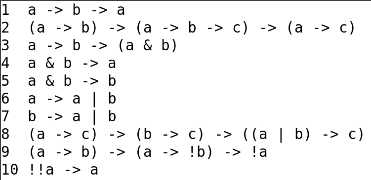

__топологическое пространство__
— упорядоченная пара $\langle X, \Omega\rangle$,
где $X$(носитель) — множество,
а $\Omega$(топология) — множество каких-то его подмножеств + аксиомы:
$\varnothing \in \Omega, X \in \Omega$ (пустое множество и всё пространство открыты)
Если $\{A_i\}$, $A_i \in \Omega$ — некоторое семейство элементов $\Omega$,
то $\bigcup_i A_i \in \Omega$ (объединение произвольного семейства открытых множеств открыто);
Если $A_1, A_2, \dots, A_n$, $A_i \in \Omega$ — конечное множество открытых множеств,
то его пересечение также открыто: $A_1 \cap A_2 \cap \dots \cap A_n \in \Omega$
открытое и замкнутое множество __Открытое множество__ — множество из $\Omega$. __Замкнутое множество__ — мн-во, дополнение которого открыто.
внутренность и замыкание множества внутренность $A$ — максимальное открытое множество $A^\circ$, входящее в $A$ замыкане $A$ — минимальное замкнутое множество $\overline A$, содержащее $A$
схема аксиом — шаблон для генерации аксиом  Интуиционисты меняют посленюю аксиому на a -> !a -> b
правило Modus Ponens — Если доказано $\alpha$ и $\alpha \rightarrow \beta$, то считаем доказанным $\beta$
доказательство — последовательность высказываний, каждое из которых либоаксиома, либо Modus Ponens.
вывод из гипотез $\alpha$ выводимо из $\Gamma$, где $\Gamma$ — список высказываний, если существует вывод,
то есть последовательность высказываний такая,
что каждое из них либо аксиома, либо из $\Gamma$, либо получается по M. P.
доказуемость ($\vdash$) Высказывание $\alpha$ доказуемо, если существует доказательство $\alpha_1 \ldots \alpha_k$,
где $\alpha_k = \alpha$.
множество истинностных значений
модель (оценка переменных)
оценка высказывания — Отображение: формула $\rightarrow$ множество истинностных значений
общезначимость ($\models$) — истинность при любой оценке
выполнимость: существует оценка, при которой формула выполнена
невыполнимость: нет такой оценки, что см выше
следование: формула X следует из $G_1 \ldots G_n$, если в любой оценке, в которой истинны $G_1 \ldots G_n$ истинна и $X$.
закон исключённого третьего $\alpha \vee \neg \alpha$
закон снятия двойного отрицания $\neg \neg \alpha \rightarrow \alpha$
закон Пирса $((\alpha \rightarrow \beta) \rightarrow \alpha) \rightarrow \alpha$
Все эти законы не выводятся в ИИВ
BHK-интерпретация логических связок $\alpha \& \beta$, если есть доказательство $\alpha$ и $\beta$ $\alpha \vee \beta$, если есть доказательство $\alpha$ или $\beta$ и мы знаем, чего именно $\alpha \rightarrow \beta$, если мы умеем строить доказательство $\beta$ из доказательства $\alpha$ $\neg \alpha$, если из $\alpha$ можно построить противоречие ($\alpha \rightarrow \perp$)
теорема Гливенко (формулировка) Если $\vdash_{\text{к}} \alpha$, то $\vdash_{\text{и}} \neg \neg \alpha$
решётка $\langle A, \leq \rangle$ — решётка, если:
$\forall a,b \in A: \quad \exists \text{наименьший } c = a + b : a \leq c, b \leq c $$\forall a,b \in A: \quad \exists \text{наибольший } c = a \cdot b : c \leq a, c \leq b $
дистрибутивная решётка решётка + свойство: $a+(b \cdot c) = (a + b) \cdot (a + c)$ лемма: $a\cdot(b+c) = a\cdot b + a \cdot c$ теорема: решётка дистрибутивна $\iff$ не содержит ни диаманта ни пентагона
импликативная решётка дистрибутивная решётка + определена операция псевдодополнения (относительно $b$):
$c = a \rightarrow b = max \{ x | x \cdot a \leq b \}$ теорема: дистрибутивность в определении можно опустить def: 1 — наибольший элемент решётки def: 0 — наименьший элемент решётки
алгебра Гейтинга — Импликативная решётка с 0 def: псевдодополнение $~a = a \rightarrow 0$ Всякая алгебра Гейтинга — модель ИИВ
булева алгебра — алгебрa Гейтинга такая, что $\forall a: a + \neg a = 1$
операция Γ(A)Добавим к алгебре Гейтинга новую “1”, большую всех элементов, а старую переименуем в “$\omega$”.
алгебра Линденбаума Пусть $\alpha$, $\beta$ — формулы, $\alpha \leq \beta$, если $\beta\vdash\alpha$,$\alpha \approx \beta$, если $\alpha \leq \beta \& \beta \leq \alpha $ Тогда, алгебра Линденбаума — $\text{ИИВ}/_{\approx}$ [факторизация по операции $\approx$] теорема: Алгебра Линденбаума — точная модель ИИВ. Но нифига не конечная. теорема: Алгебра Линденбаума — Гёделева
формулировка свойства дизъюнктивности и.и.в — $\vdash \alpha \vee \beta \implies \vdash \alpha \text{ или } \vdash \beta$
Определить модель, значит задать логические связки и истинностные значения
Модель корректна, если любое доказуемое утверждение в ней истинно
Модель полна, если любое истинное в ней утверждение доказуемо
Модель точная, она корректна и полна
Исчисление называют табличным, если существует конечная точная модель этого исчисления
формулировка свойства нетабличности и.и.в.: ИИВ не таблично (см выше)
Исчисление предикатов
предикатные и функциональные символы, константы и пропозициональные переменные
свободные и связанные вхождения предметных переменных в формулу
свобода для подстановки
D предметное множество
V множество истинностынх значений
ФУНКЦИЯ : D -> D
ПРЕДИКАТ : D -> V
Предметная переменная a, b, c, x, y, z, a₀, a' …
Терм θ₀, θ₁ …
Предикатный символ P
Формула α, ψ, φ
ТЕРМ =
(предметная переменная) |
(функциональный символ) (ТЕРМ₀, ТЕРМ₁, …)
ФОРМУЛА =
(ФОРМУЛА | ФОРМУЛА) |
(ФОРМУЛА & ФОРМУЛА) |
(ФОРМУЛА -> ФОРМУЛА) |
(!ФОРМУЛА) |
(∀ предметная переменная.ФОРМУЛА) |
(∃ предметная переменная.ФОРМУЛА) |
(предикатный символ)(ТЕРМ₀, ТЕРМ₁, …)
Связанное вхождение — вхождение в области действия квантора.
Связывающее вхождение — вхождение непосредственно рядом с квантором.
Ex: (∀x. … x …) первое вхождение — связывающее, второе вхождение — связанное.
Не связанные и не связывающие вхождения — свободные.
Терм θ свободен для подстановки в формулу ψ вместо x, если после подстановки θ вместо свободных вхождений x, θ не станет связанным.
два правила для кванторов $\newenvironment{rcases}{\left.\begin{array}}{\end{array}\right\rbrace}$
\(\begin{rcases}{l}2. \dfrac{\psi \rightarrow \phi}{\psi \rightarrow \forall x.\phi} \\3. \dfrac{\phi \rightarrow \psi}{(\exists x.\phi) \rightarrow \psi} \end{rcases}\)
, где $x$ не входит свободно в $\psi$
две аксиомы для кванторов \(\begin{rcases}{l}11. (\forall x.\phi) \rightarrow \phi [x:=\Theta]\\12. \phi [x:=\Theta] \rightarrow \exists x.\phi\end{rcases}\)
, где $\Theta$ свободна для подстановки вместо $x$ в $\phi$
оценки и модели в исчислении предикатов Чтобы оценить значение формулы в ИП, нужно задать кортеж $\left\langle D,E,P,R \right\rangle$, где:
$D$ — предметное множество
$E$ — оценка для функциональных символов $(D^n\rightarrow D)$
$P$ — оценка для предикатов $D^n \rightarrow V$
$R$ — свободные предметные переменные
теорема о дедукции для И. П.
$\Gamma, \alpha \vdash \beta$, в доказательстве нет применений правил для кванторов по свободным переменным из $\alpha$, то $\Gamma \vdash \alpha \rightarrow \beta$$\Gamma \vdash \alpha \rightarrow \beta \implies \Gamma, \alpha \vdash \beta$
лемма: $[\![\psi]\!]^{x:=[\![\theta]\!]}=[\![\psi[x:=[\![\theta]\!]]]\!]$, если $\theta$ свободна для подстановки вместо $x$
теорема о корректности для И. П.:
каждое доказуемое утв. общезначимо
Множество $\Gamma$ непротиворечиво, если нет $\alpha$ такого, что $\Gamma \vdash \alpha$ и $\Gamma \vdash \neg \alpha$
Формула замкнута, если она не содержит свободных переменных
Формула бескванторна, если она не содержит кванторов
полное непротиворечивое множество (бескванторных) формул —
непротиворечивое множество (бескванторных) формул + св-во: $\forall \alpha: \quad \alpha \in \Gamma | \neg \alpha \in \Gamma$
модель для формулы
__модель__ — $\left \langle D, E, P \right \rangle$
теорма Гёделя о полноте исчисления предикатов (формулировка) лемма: Для любой формулы ИП найдётся эквив. ей ф-ла с поверхностными кванторами теорема: $\Gamma$ — непротиворечивое множество формул ИП. Тогда, существует модель для $\Gamma$
следствие из теоремы Гёделя о исчислении предикатов: если формула общезначима, то она выводима